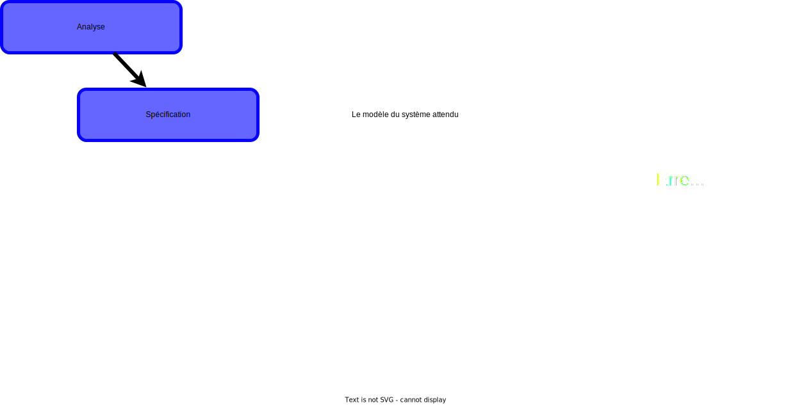
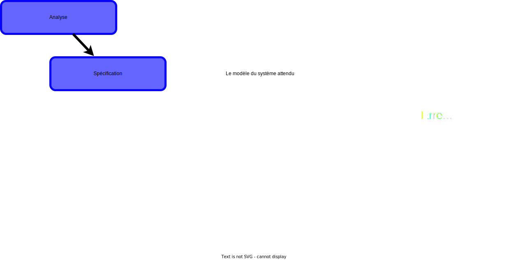

2A - Bachelor Universitaire de Technologie
IUT d'Orsay - Université Paris-Saclay - 2023/2024
IUT d'Orsay - Université Paris-Saclay - 2023/2024

Cycle de développement
 



Définitions
Les entités
- Deux entités principales
dans un diagramme de séquence :- un acteur représentant une entité extérieur au système
- un objet représentant une entité
du système
-
Chaque entité a une ligne de vie représentée par une ligne verticale
- en pointillée lorsque l’entité est inactive
- en bloc lorsque l’entité est active
Les messages
- Différents types de communications :
- création d’un objet
- appels de méthodes
- envoi d’un signal
- destruction d’un objet ...
Les messages
- Une communication peut être représentée par trois types de messages
- message synchrone :
l'entité attend la réponse avant de continuer - message de retour :
la réponse d’une entité à un message - message asynchrone :
l'entité n’attend pas la réponse pour continuer
- message synchrone :
Exemple
Les fragments combinés
- Dans un diagramme de séquence, il est possible :
- de représenter des contraintes ou des propriétés
particulières
(exécution atomique, répétition, ...). - de décomposer une interaction complexe en fragments simples.
- de représenter des contraintes ou des propriétés
particulières
-
Le fragment combiné est l'élément graphique permettant
de représenter ce type d'information.
Les fragments combinés
- Un fragment combiné est constitué de :
- un opérateur d’interaction
(type de la combinaison) - un ou plusieurs fragments d’interaction
(une partie du diagramme)
- un opérateur d’interaction
-
L'opérateur d’interaction est indiqué
dans le coin supérieur gauche
dans un rectangle.
Alternative
Alternative - alt :
sélectionner un comportement en fonction d'une condition.
sélectionner un comportement en fonction d'une condition.
Option
Option - opt :
exécuter un comportement
si la condition de garde est vérifiée.
exécuter un comportement
si la condition de garde est vérifiée.
Boucle
Boucle - loop :
exécuter une interaction tant qu’une condition est satisfaite.
exécuter une interaction tant qu’une condition est satisfaite.
Rupture
Rupture - break :
exécuter le fragment associé puis
mettre fin à l’interaction englobante.
exécuter le fragment associé puis
mettre fin à l’interaction englobante.
Parallèle
Parallèle - par :
les fragments d’interaction associés sont exécutés en parallèle.
les fragments d’interaction associés sont exécutés en parallèle.
Opérateurs supplémentaires
- ref : appeler une interaction décrite par ailleurs.
- strict : l’ordre d’exécution doit être strictement respecté.
- weak : l’ordre d’exécution des opérations n’a pas d’importance.
- ignore : certains messages peuvent être absents sans incidence.
- consider : certains messages doivent être obligatoirement présents.
- critical : une séquence d’interactions ne peut être interrompue
(séquence critique est atomique).
En complément du diagramme
de cas d'utilisation
- à la place de la description textuelle des scénarios du diagramme
de cas d'utilisation. - pour décrire les flux d’informations échangés
pour la réalisation
d’un cas d'utilisation.
Exemple
Exemple
En complément du diagramme
de classe
- identifier les liens entre les objets (les classes).
- identifier les méthodes nécessaires pour les objets (les classes).